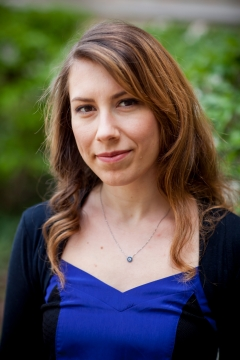

Open CV
Aylin Acun
Ph.D. in Bioengineering
Boston, MA, USA


About Me
My research at CEM focuses on the development of functional liver substitutes using donor livers that were rejected for transplantation. We aim to repurpose such livers through decellularizing them and subsequently repopulating them with primary hepatocytes or human induced pluripotent stem cells. In addition, I am interested in identifying the extracellular matrix factors that play role in liver function and regeneration through studying rat and human livers at different ages and disease conditions.

Professional Experience
Widener UniversityPhiladelphia, PA
Assistant Professor August 2021 – present
CENTER FOR ENGINEERING IN MEDICINE- MASSACHUSETTS GENERAL HOSPITAL - HARVARD MEDICAL SCHOOL Boston, MA
Postdoctoral Research Fellow September 2018 – July 2021
- Whole human liver decellularization and recellularization for repurposing livers clinically not accepted for transplantation.
- Recellularizing decellularized rat livers with iPSCs for developing in vitro and in vivo functional liver substitutes.
- Developing novel wound closure remedies for chronic wound healing.
University of Notre DameNotre Dame, IN
Doctoral Resarcher January 2013 - May 2018
- Designed and developed the first hiPSC-derived, in vitro aged myocardial tissue models for modeling age-related cardiovascular diseases using tissue engineering and stem cell culture techniques.
- Involved in design and development of myocardium-on-chip model with integrated flow using hiPSC-derived cardiomyocytes and endothelial cells.
- Developed HIF-1a knock down hiPSC-derived endothelial cells using shRNA and siRNA targeting to investigate endothelial cell-mediated cardio-protection under cardiac reperfusion injury conditions.
HARVARD UNIVERSITYBoston, MA
Visiting Researcher, Stem Cell and Regenerative Biology June 2014 – February 2015
- Developed and characterized HIF-1a knockout hiPSCs using CRISPR/Cas9 technology.
- Implemented stem cell culture and differentiation techniques to develop human-origin endothelial cells and cardiomyocytes.
MIDDLE EAST TECHNICAL UNIVERSITYAnkara, Turkey
Graduate Researcher, Biotechnology February 2011 – January 2013
- Designed and developed a two-layered, collagen-based tissue engineered cornea model using phase separation and electrospinning techniques and characterized its structure and functionality.
Professional Interests
Tissue Engineering and Regenerative Medicine
- Developing 3D in vitro tissue models and whole organ substitutes.
Aging Research – in vitro Aged Tissue Models to Study Age-related Diseases
- Modeling Age-related Cardiovascular and Metabolic Diseases in vitro and in vivo.
Stem Cell Research
- Developing iPSC-based therapies using tissue and animal models.
BIOMEMS - Organ-on-chip Technology
- Cardiovascular and metabolic disease models on-chip for clinical applications.
Education
University of Notre DameNotre Dame, IN
Bioengineering Graduate Program May 2018
- Dissertation topic: hiPSC-based, human-origin, aged in vitro cardiac disease models.
- Advisor: Dr. Pinar Zorlutuna.
Middle East Technical University (METU)Ankara, Turkey
M.Sc. (Biotechnology Graduate Program) January 2013
- Thesis topic: Collagen-based, double layer cornea tissue engineering.
- Advisor: Dr. Vasif Hasirci
Middle East Technical University (METU)Ankara, Turkey
B.S., Biological Sciences June 2010
Technical Skills
- Whole and partial rat and human liver decellularization and recellularization
- Induced pluripotent stem cell culture and differentiation to endothelial cells and cardiomyocytes
- Tissue engineering construct fabrication, characterization, and culture
- Microfluidic heart-on-chip fabrication and culture
- Confocal and fluorescence microscopy
- CRISPR/Cas9 editing
- Molecular biology techniques (shRNA and siRNA editing, RT-qPCR)
Honors & Awards
- 2nd International Conference on Stem Cells Student Travel Award, Aegean Conferences, Rhodes, Greece (September 2017).
- Graduate Student Union Conference Presentation Grant, University of Notre Dame, IN (October 2017).
- Middle East Technical University Research Coordination Office Graduate Student Research Grant (METU-BAP- DPT, 2011-2012).
- Graduated with Honors from METU, Department of Biological Sciences, Biology Program (2010).
Certifications
- Researcher Management and Leadership Training, a non-credit course authorized by University of Colorado System. November 2020
- Striving for Excellence in Teaching Certificate, Kaneb Center for Teaching and Learning, University of Notre Dame. February 2018
- Cancer Nanotechnology and Cell Mechanics Workshop Completion Certificate, 2015 BioNanotechnology Summer Institute, University of Illinois at Urbana-Champaign. August 2015
Selected Publications (out of 14)
- A. Acun, R. Oganesyan, H. Yeh, K. Uygun, M.L. Yarmush, B.E. Uygun (2021). Liver donor age affects hepatocyte function through age-dependent changes in decellularized liver matrix.. Biomaterials.
- A. Acun, T.D. Nguyen, P. Zorlutuna (2018). hiPSC-derived in vitro aged heart tissue model shows molecular and functional deterioration resembling aged mammalian heart. Acta Biomaterialia.
- A. Acun, & P. Zorlutuna (2019). CRISPR/Cas9 edited hiPSC-based vascular tissues to model aging and disease-dependent impairment.. Tissue Engineering Part A. 25(9-10):759-772
Leadership & Service
Seminar Series Organization Center for Engineering in Medicine
- Involved in the organization of Spring 2019 Seminar Series at Center for Medicine in Engineering, Massachusetts General Hospital – Harvard Medical School. Contacted researchers that excel in various disciplines of biomedical engineering and helped arranging 7 seminar talks for Spring 2019.
High School Student Mentorship University of Notre Dame
- Trained a high school junior on basic principles of tissue engineering for introducing her to science and research and help her to have her own project for two years.
Undergraduate Student Mentorship University of Notre Dame
- Trained 7 undergraduate students with various backgrounds on basic principles of tissue engineering for introducing them to science and research in graduate level and mentoring them on their own projects.
Workshop Organization University of Notre Dame
- Organized and lead the workshops that includes an oral presentation and hands-on experience of cell and tissue culture and basic tissue engineering concepts for my research group in Expending Your Horizons Conference in 2016, 2017, and 2018.